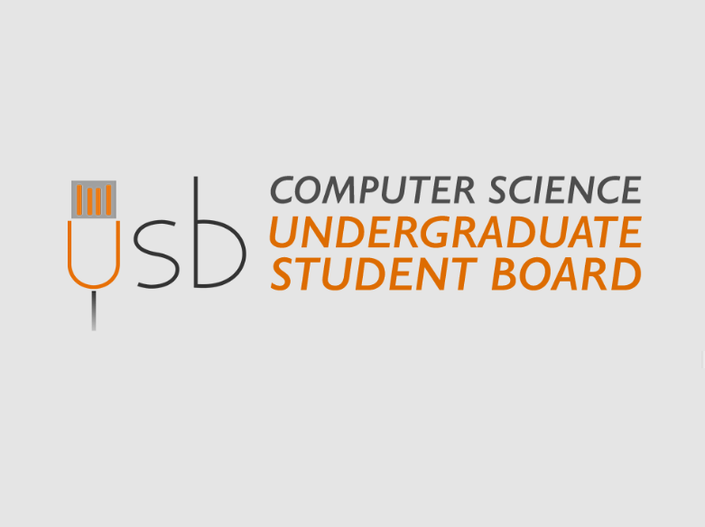

Undergraduate Student Board of Computer Science
USB is a orginization at Purdue which continuously communicates with corporate sponsors, job recruiters, and professors regarding planning tech talks and community events. Some current initiatives include Demo Day, Corporate Sponsor Mix, and Interview Workshops.